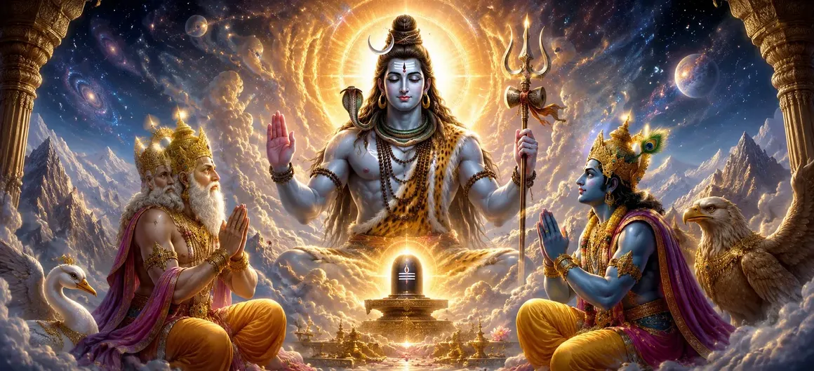

प्रकाश के अनंत स्तंभ को देखने और विनम्रता और भक्ति के साथ भगवान शिव के पास जाने के बाद, ब्रह्मा और विष्णु सर्वोच्च आध्यात्मिक ज्ञान प्राप्त करने के लिए तैयार थे। उनका अभिमान नष्ट हो गया था, और ईमानदारी से पूछताछ के माध्यम से उनके दिल शुद्ध हो गए थे। उनकी भक्ति से प्रसन्न होकर, भगवान शिव ने अपना वास्तविक स्वरूप प्रकट करने का निर्णय लिया। उन्होंने समझाया कि वह महेश्वर हैं - महान भगवान जो सृजन, संरक्षण और विघटन से परे मौजूद हैं। जबकि ब्रह्मा सृजन करते हैं और विष्णु ब्रह्मांड का पालन-पोषण करते हैं, सभी दिव्य शक्तियां अंततः शिव नामक सर्वोच्च वास्तविकता से उत्पन्न होती हैं। यह अध्याय विद्येश्वर संहिता के सबसे महत्वपूर्ण रहस्योद्घाटन में से एक है। यह शिव की शाश्वत प्रकृति, सभी ब्रह्मांडीय कार्यों के स्रोत के रूप में उनकी स्थिति और समय, स्थान और सभी सीमाओं से परे सर्वोच्च भगवान के रूप में उनकी भूमिका की व्याख्या करता है। इस पवित्र शिक्षा के माध्यम से, ब्रह्मा और विष्णु को ब्रह्मांड को नियंत्रित करने वाली दिव्य व्यवस्था की गहरी समझ प्राप्त होती है।
शिव ने स्वयं को सभी ब्रह्मांडीय कार्यों से परे शाश्वत वास्तविकता घोषित किया।
सृजन, संरक्षण और विघटन की सभी शक्तियाँ उन्हीं से उत्पन्न होती हैं।
अनंत स्तंभ के पीछे का रहस्य अंततः स्पष्ट हो गया।
ब्रह्मा और विष्णु के सामने श्रद्धापूर्वक खड़े होने पर, भगवान शिव ने अपनी असली पहचान प्रकट करना शुरू कर दिया। उन्होंने समझाया कि वह महेश्वर हैं, महान भगवान जो सृष्टि शुरू होने से पहले मौजूद हैं और सभी दुनियाओं के खत्म होने के बाद भी बने रहते हैं। शिव ने घोषणा की कि ब्रह्मांड कई दिव्य कार्यों के माध्यम से संचालित होता है, फिर भी प्रत्येक कार्य के पीछे की शक्ति अकेले उनसे उत्पन्न होती है। सृष्टि उनकी इच्छा से उत्पन्न होती है, संरक्षण उनकी ऊर्जा से होता है और विघटन उनकी आज्ञा से होता है। हालाँकि ये गतिविधियाँ अलग-अलग दिखाई देती हैं, लेकिन उनका स्रोत एक शाश्वत वास्तविकता है। ब्रह्मा और विष्णु ने जिस अनंत प्रकाश स्तंभ को देखा था, वह केवल एक चमत्कारी रूप नहीं था। यह शिव की असीम प्रकृति का प्रकटीकरण था, जो दर्शाता है कि उन्हें स्थान, समय या बुद्धि से नहीं मापा जा सकता है। महेश्वर के रूप में, वह हर चीज से परे रहते हुए हर चीज में व्याप्त है। इन शब्दों को सुनकर, ब्रह्मा और विष्णु को समझ में आ गया कि परम भगवान किसी एक रूप या कार्य तक सीमित नहीं हैं। शिव वह शाश्वत आधार हैं जिस पर संपूर्ण ब्रह्मांड टिका हुआ है।
महेश्वर द्वारा प्रदत्त शक्ति से ब्रह्मा सृष्टि का कार्य करते हैं।
विष्णु परमेश्वर की इच्छा से ब्रह्मांड का पालन-पोषण और रक्षा करते हैं।
रुद्र ब्रह्मांडीय अस्तित्व के शाश्वत चक्र को पूरा करते हुए, विघटन करते हैं।
भगवान शिव ने समझाया कि ब्रह्मांड विभिन्न दिव्य शक्तियों के माध्यम से कार्य करता प्रतीत होता है, फिर भी ये शक्तियाँ एक दूसरे से स्वतंत्र नहीं हैं। सृजन, संरक्षण और विघटन एक ही सर्वोच्च वास्तविकता की विभिन्न अभिव्यक्तियाँ मात्र हैं। ब्रह्मा संसार की रचना करते हैं, विष्णु उनका संरक्षण करते हैं और जब ब्रह्मांडीय चक्र अपने समापन पर पहुंचता है तो रुद्र उन्हें विघटित कर देते हैं। हालाँकि, इनमें से कोई भी कार्य महेश्वर से अलग मौजूद नहीं है। जिस प्रकार सूर्य से किरणें निकलती हैं, उसी प्रकार सभी दिव्य गतिविधियाँ परमेश्वर से उत्पन्न होती हैं। शिव ने सिखाया कि जो लोग केवल देवताओं के बीच मतभेद देखते हैं वे गहरे सत्य को समझने में असफल होते हैं। बुद्धिमान लोग स्पष्ट विविधता के पीछे की एकता को पहचानते हैं। प्राणियों को उनकी समझ के अनुसार मार्गदर्शन करने के लिए देवत्व के कई रूप मौजूद हैं, लेकिन उनका स्रोत एक शाश्वत वास्तविकता है। इस शिक्षण के माध्यम से, ब्रह्मा और विष्णु ने समझा कि संपूर्ण ब्रह्मांडीय व्यवस्था महेश्वर पर निर्भर है, जो उनसे परे रहते हुए सभी कार्यों को नियंत्रित करते हैं।
महेश्वर सृष्टि से पहले विद्यमान थे और प्रलय के बाद भी विद्यमान हैं।
कोई भी दिशा, संसार या आयाम परमेश्वर को समाहित नहीं कर सकता।
शिव शाश्वत चेतना हैं जो समस्त अस्तित्व में व्याप्त हैं।
भगवान शिव ने आगे बताया कि उनके वास्तविक स्वरूप को सामान्य धारणा के माध्यम से नहीं समझा जा सकता है। सभी प्राणी समय और स्थान के भीतर मौजूद हैं, लेकिन महेश्वर किसी से बंधे नहीं हैं। समय उसकी उपस्थिति के कारण बहता है, फिर भी वह उसकी गति से अछूता रहता है। ब्रह्मांडीय चक्र के भीतर संसार उत्पन्न होते हैं और गायब हो जाते हैं, फिर भी वह अपरिवर्तित रहता है। परमेश्वर महज़ दूर स्वर्ग में रहने वाला एक शासक नहीं है। वह सृष्टि के प्रत्येक प्राणी और प्रत्येक परमाणु के भीतर विद्यमान शाश्वत चेतना है। वह ब्रह्मांड के भीतर विद्यमान है और साथ ही उसका अतिक्रमण भी करता है। शिव ने सिखाया कि बुद्धि इस सत्य का केवल एक भाग ही समझ सकती है। उच्चतम अनुभूति भक्ति, ध्यान और दैवीय कृपा से आती है। जब अज्ञान दूर हो जाता है, तो साधक को सभी बदलते रूपों के पीछे मौजूद शाश्वत वास्तविकता का एहसास होने लगता है। इस गूढ़ उपदेश को सुनकर ब्रह्मा और विष्णु आश्चर्य से भर गये। उन्हें एहसास हुआ कि महेश्वर केवल देवताओं में सबसे महान नहीं हैं, बल्कि अनंत वास्तविकता हैं जिससे सभी देवता, दुनिया और ब्रह्मांडीय सिद्धांत उत्पन्न होते हैं।
ब्रह्मा और विष्णु ने दिव्य ज्ञान प्राप्त करने के लिए गहरी कृतज्ञता व्यक्त की।
उन्होंने शिव को सभी प्राणियों के स्रोत, पालनकर्ता और अंतिम आश्रय के रूप में महिमामंडित किया।
दोनों देवताओं ने सभी सीमाओं से परे शिव को सर्वोच्च भगवान के रूप में स्वीकार किया।
महेश्वर की गहन शिक्षा सुनकर ब्रह्मा और विष्णु ने हाथ जोड़कर भगवान शिव को प्रणाम किया। उनके संदेह दूर हो गये थे और उनके हृदय भक्ति और आश्चर्य से भर गये थे। उन्होंने शिव की स्तुति उस शाश्वत भगवान के रूप में की, जो सृष्टि से पहले मौजूद थे, सभी दुनियाओं का पालन-पोषण करते थे और ब्रह्मांड के विघटन के बाद भी बने रहे। उन्होंने स्वीकार किया कि प्रत्येक दैवीय शक्ति, प्रत्येक ब्रह्मांडीय सिद्धांत और प्रत्येक पवित्र कर्तव्य अंततः उन्हीं से उत्पन्न होते हैं। ब्रह्मा और विष्णु ने घोषणा की कि प्रकाश का अनंत स्तंभ शिव की असीम महिमा का प्रकटीकरण था। जिसे उन्होंने एक बार मापने का प्रयास किया था, उसे कभी भी मापा नहीं जा सकता, क्योंकि सर्वोच्च भगवान सभी रूपों, नामों और सीमाओं से परे हैं। अपनी भक्ति और समर्पण के माध्यम से, उन्हें ईश्वरीय व्यवस्था की गहरी समझ प्राप्त हुई। उनकी श्रद्धा ने प्रदर्शित किया कि सच्चा ज्ञान अहंकार में नहीं बल्कि सर्वोच्च वास्तविकता के प्रति विनम्र भक्ति में परिणत होता है।
शिव ने ब्रह्मा को सृष्टि की पवित्र जिम्मेदारी सौंपी।
विष्णु को ब्रह्मांड की रक्षा और सुरक्षा करने का अधिकार दिया गया था।
महेश्वर ने उन सभी को अपनी कृपा का वादा किया जो भक्तिपूर्वक उनकी पूजा करते हैं।
अपने सर्वोच्च स्वरूप को प्रकट करने के बाद, भगवान शिव ने ब्रह्मा और विष्णु पर दया की दृष्टि से देखा। उनकी विनम्रता और भक्ति से प्रसन्न होकर, उन्होंने उन्हें दिव्य आशीर्वाद दिया और उन्हें संबंधित लौकिक जिम्मेदारियाँ सौंपीं। ब्रह्मा को, उन्होंने सृजन की शक्ति प्रदान की, जिससे उन्हें दुनिया, प्राणियों और ब्रह्मांड में रहने वाले जीवन के अनगिनत रूपों को प्रकट करने में सक्षम बनाया गया। विष्णु को, उन्होंने सृष्टि की स्थिरता, सद्भाव और सुरक्षा सुनिश्चित करने, संरक्षण का पवित्र कर्तव्य सौंपा। शिव ने समझाया कि ये जिम्मेदारियाँ उनकी अपनी इच्छा से अलग नहीं थीं। वे उनकी कृपा से किये गये दिव्य कार्य थे। ब्रह्मांडीय कानून के अनुसार अपने कर्तव्यों का पालन करके, ब्रह्मा और विष्णु दिव्य योजना के अनावरण में भाग लेंगे। महान भगवान ने आगे घोषणा की कि जो भी व्यक्ति ईमानदारी, भक्ति और हृदय की पवित्रता के साथ उनके पास आएगा, उसे उनका आशीर्वाद मिलेगा। चाहे देवता हों, ऋषि हों या सामान्य भक्त, सभी उनकी कृपा और स्मरण से आध्यात्मिक प्रगति प्राप्त कर सकते हैं।
दोनों देवताओं ने भक्ति और दिव्य प्रसाद के साथ महेश्वर की पूजा की।
शिव ने लिंग की पूजा को दैवीय कृपा का एक शक्तिशाली मार्ग घोषित किया।
भविष्य की पीढ़ियों के लिए शिव पूजा की प्रथा स्थापित की गई।
भक्ति से भरकर, ब्रह्मा और विष्णु ने फूलों, धूप, दीप, पवित्र आभूषणों और अन्य दिव्य प्रसादों से भगवान शिव की पूजा की। उनकी पूजा केवल औपचारिक नहीं थी; यह परमेश्वर के प्रति पूर्ण समर्पण की अभिव्यक्ति थी। शिव ने उनकी भक्ति स्वीकार कर ली और बहुत प्रसन्न हुए। भावी पीढ़ियों का मार्गदर्शन करने के लिए, महेश्वर ने अपने पवित्र लिंग की पूजा की स्थापना की। उन्होंने बताया कि लिंग केवल एक प्रतीक नहीं है, बल्कि उनकी अनंत और निराकार वास्तविकता की अभिव्यक्ति है। इसकी पूजा के माध्यम से, भक्त सर्वोच्च भगवान के पास पहुंच सकते हैं, दिव्य आशीर्वाद प्राप्त कर सकते हैं और मुक्ति के मार्ग पर आगे बढ़ सकते हैं। शिव ने आगे सिखाया कि विश्वास और हृदय की पवित्रता के साथ सच्ची पूजा, बाहरी भव्यता से अधिक महत्वपूर्ण है। चाहे देवता, ऋषि-मुनि अथवा सामान्य भक्त द्वारा की गई हो, भक्ति भाव से की गई पूजा सीधे उन तक पहुंचती है। इस प्रकार शिव पूजा की परंपरा देवताओं और मनुष्यों की दुनिया में समान रूप से स्थापित हो गई।
शिव ने अपने प्रकट होने की पवित्र रात को शाश्वत शुभ घोषित किया।
इस रात उपवास, प्रार्थना और भक्ति से अत्यधिक आध्यात्मिक लाभ मिलता है।
शिवरात्रि का पालन शैव धर्म में सबसे पवित्र व्रतों में से एक बन गया।
ब्रह्मा और विष्णु की भक्ति से प्रसन्न होकर, भगवान शिव ने घोषणा की कि उनके प्रकट होने से जुड़ी पवित्र रात को हमेशा शिवरात्रि के रूप में मनाया जाएगा। उन्होंने इसे पूजा, ध्यान और आध्यात्मिक अनुशासन के लिए सबसे पवित्र अवसरों में से एक घोषित किया। शिव ने समझाया कि शिवरात्रि पर की गई सच्चे मन से की गई पूजा अत्यधिक आध्यात्मिक योग्यता प्रदान करती है। इस पवित्र रात में उपवास, प्रार्थना, आत्म-संयम और भगवान का स्मरण आशीर्वाद लाता है जो भक्तों को मुक्ति के मार्ग पर आगे बढ़ने में मदद करता है। ईमानदारी से पालन से प्राप्त योग्यता असाधारण रूप से शक्तिशाली मानी जाती है। इस प्रकार शिवरात्रि का पालन भक्तों के बीच एक पवित्र परंपरा बन गई। यह रात शिव की अनंत प्रकृति और सभी प्राणियों को सत्य, ज्ञान और मुक्ति की ओर मार्गदर्शन करने की उनकी दयालु इच्छा की याद दिलाती है।
ब्रह्मा और विष्णु ने जान लिया कि शिव ही समस्त अस्तित्व का शाश्वत स्रोत हैं।
शिव की शिक्षाओं से उनके संदेह और गलतफहमियाँ दूर हो गईं।
उन्हें सभी दिव्य रूपों और शक्तियों के पीछे की एकता की समझ आ गई।
महेश्वर की शिक्षाओं ने ब्रह्मा और विष्णु की समझ को बदल दिया। उन्हें एहसास हुआ कि सर्वोच्च वास्तविकता रूप, नाम या कार्य तक सीमित नहीं है। सभी दिव्य अभिव्यक्तियाँ एक ही शाश्वत स्रोत से उत्पन्न होती हैं और अंततः उसी में लौट आती हैं। श्रेष्ठता को लेकर उनका पिछला विवाद अब महत्वहीन लग रहा था। शिव के रहस्योद्घाटन के प्रकाश में, वे समझ गए कि प्रत्येक लौकिक भूमिका का अर्थ केवल तभी है जब वह सर्वोच्च भगवान से जुड़ा हो। सृजन, संरक्षण और संहार महेश्वर द्वारा स्थापित दैवीय व्यवस्था के तहत किए जाने वाले पवित्र कर्तव्य हैं। इस ज्ञान को पाकर ब्रह्मा और विष्णु कृतज्ञता से भर गये। उन्होंने माना कि सच्चा ज्ञान अहंकार की ओर नहीं बल्कि भक्ति, विनम्रता और सेवा की ओर ले जाता है। शिव की कृपा से, उन्हें ब्रह्मांडीय सत्य और उसके भीतर अपने स्थान की स्पष्ट दृष्टि प्राप्त हुई। यह पवित्र अनुभूति न केवल देवताओं के लिए बल्कि भविष्य की पीढ़ियों के भक्तों के लिए भी एक मार्गदर्शक सिद्धांत बन गई जो भगवान शिव की भक्ति के माध्यम से उच्चतम सत्य की तलाश करते हैं।
भगवान शिव ने स्वयं को सृजन, संरक्षण और विघटन से परे सर्वोच्च वास्तविकता के रूप में प्रकट किया।
ब्रह्मा, विष्णु और रुद्र अलग-अलग कार्य करते हैं, फिर भी सभी अपनी शक्ति महेश्वर से प्राप्त करते हैं।
शिव ने पवित्र पूजा की स्थापना की और भक्तिपूर्वक उनकी खोज करने वाले सभी भक्तों को आशीर्वाद दिया।
अध्याय 9 विद्येश्वर संहिता के सबसे महत्वपूर्ण रहस्योद्घाटन में से एक है। भगवान शिव खुद को महेश्वर, महान भगवान के रूप में घोषित करते हैं जो सभी ब्रह्मांडीय कार्यों को पार करते हुए उन्हें बनाए रखते हैं। उनकी शिक्षाओं के माध्यम से, ब्रह्मा और विष्णु को एहसास हुआ कि संपूर्ण ब्रह्मांड उनकी शाश्वत इच्छा के अनुसार संचालित होता है। अध्याय सृजन, संरक्षण और विघटन के पीछे की एकता की व्याख्या करता है, यह दर्शाता है कि ये अलग-अलग शक्तियाँ नहीं हैं बल्कि एक सर्वोच्च वास्तविकता की अभिव्यक्तियाँ हैं। शिव पवित्र लिंग की पूजा की स्थापना करते हैं और उन लोगों को आशीर्वाद देते हैं जो भक्ति, विनम्रता और हृदय की पवित्रता के साथ उनके पास आते हैं। अध्याय के अंत तक, ब्रह्मा और विष्णु को सर्वोच्च ज्ञान प्राप्त हो गया है और वे महेश्वर को सभी अस्तित्व के स्रोत के रूप में स्वीकार करते हैं। अब ओमकारा और पाँच ब्रह्मांडीय शक्तियों से संबंधित अगले रहस्योद्घाटन के लिए मंच तैयार है।
"सारी सृष्टि मुझसे उत्पन्न होती है, सभी संसार मुझमें रहते हैं, और सभी चीजें मुझमें लौट आती हैं। मैं महेश्वर हूं, समय, स्थान और सीमा से परे शाश्वत वास्तविकता।"
विद्येश्वर संहिता का अध्याय 9 शिव पुराण के सबसे महत्वपूर्ण धार्मिक अध्यायों में से एक है। यहां, भगवान शिव औपचारिक रूप से खुद को महेश्वर के रूप में प्रकट करते हैं - सर्वोच्च भगवान जिनसे ब्रह्मा, विष्णु और सभी ब्रह्मांडीय शक्तियां अपना अधिकार प्राप्त करती हैं। यह अध्याय सृजन, संरक्षण और विनाश से परे अंतिम वास्तविकता के रूप में शिव पर कई बाद की शिक्षाओं की नींव बनाता है।
भगवान शिव ने आदि ध्वनि ओम के पवित्र महत्व को समझाना शुरू किया।
भगवान उन पाँच शाश्वत कार्यों को प्रकट करते हैं जिनके माध्यम से ब्रह्मांड संचालित होता है।
शिक्षाएँ धर्मशास्त्र से गहन आध्यात्मिक दर्शन की ओर बढ़ती हैं।
स्वयं को महेश्वर के रूप में प्रकट करने के बाद, भगवान शिव अब अस्तित्व के गहरे रहस्यों को समझाने की तैयारी कर रहे हैं। अगले अध्याय में, वह ओंकार का अर्थ प्रकट करते हैं - वह मौलिक ध्वनि जिससे ब्रह्मांड निकलता है - और पाँच ब्रह्मांडीय गतिविधियों (पंचकृत्य) की व्याख्या करता है जिसके माध्यम से सृष्टि कायम और निर्देशित होती है। ये शिक्षाएँ विद्येश्वर संहिता के सबसे गहन दार्शनिक खण्डों में से एक हैं और ब्रह्मांड के शाश्वत क्रम में शिव की भूमिका की गहरी समझ प्रदान करती हैं।
महेश्वर सृजन, संरक्षण और विघटन से परे शाश्वत वास्तविकता के रूप में अपने सर्वोच्च पहलू में भगवान शिव हैं।
शिव की अनंत प्रकृति और सर्वोच्च सत्ता को महसूस करने के बाद, उन्होंने भक्ति और श्रद्धा के साथ उनकी पूजा की।
शिवलिंग सर्वोच्च भगवान की अनंत और निराकार प्रकृति का प्रतिनिधित्व करता है और पूजा के लिए एक पवित्र केंद्र के रूप में कार्य करता है।
सच्चा ज्ञान विनम्रता, भक्ति और सभी रूपों के पीछे सर्वोच्च वास्तविकता की पहचान के माध्यम से प्राप्त किया जाता है।
अगला अध्याय ओमकार (ओम) और पाँच ब्रह्मांडीय शक्तियों की व्याख्या करता है जिनके माध्यम से ब्रह्मांड का निर्माण, पालन और मार्गदर्शन किया जाता है।
विद्येश्वर संहिता के पिछले और अगले अध्याय का अन्वेषण करें।